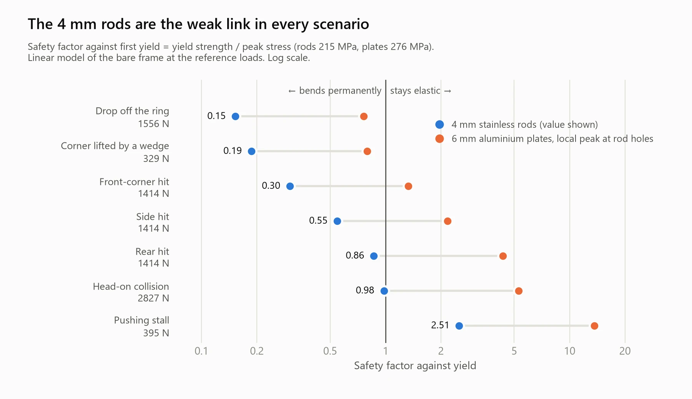
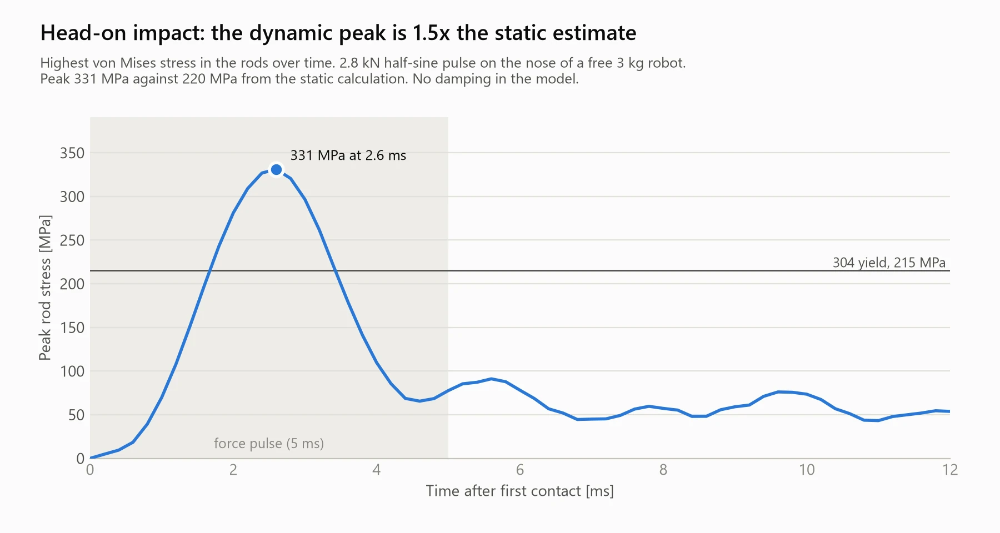
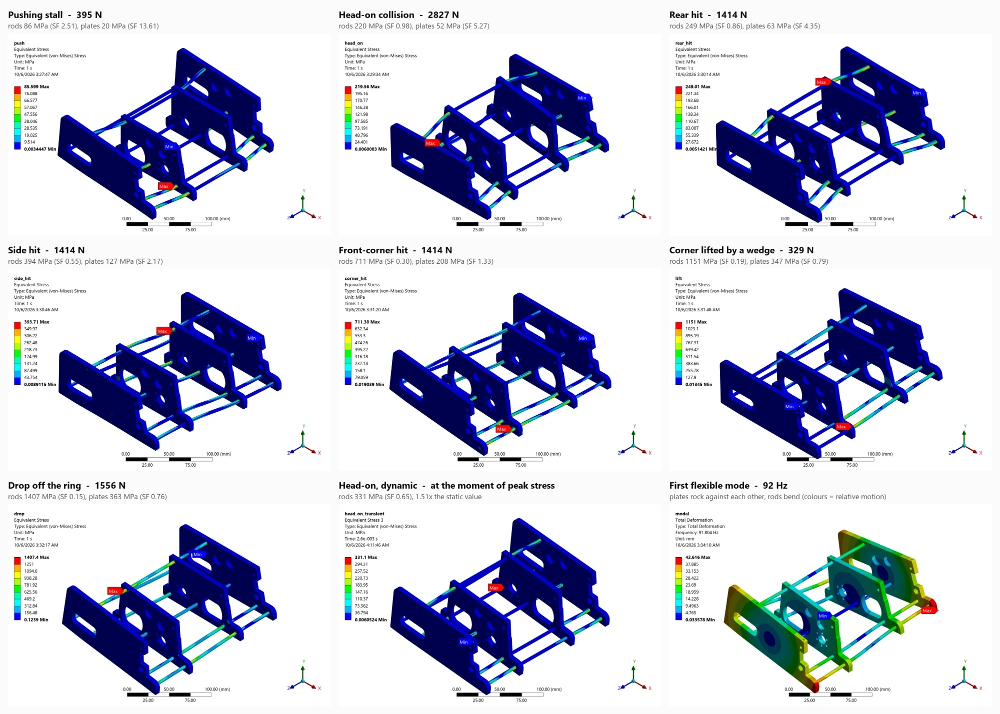

It started with a simpler robot.
My first sumo robot competed in the 2 kg class in 2024. It won the university championship and placed third nationally. It was a simple machine: two low-power DC motors with their own gearboxes, bought wheels, an Arduino Mega, and ultrasonic, time-of-flight and infrared sensors. The body was laser-cut black steel sheet that I tack-welded myself.
It was a great project, but most of what mattered in it came ready-made. For the 3 kg robot I set out to build almost everything from scratch.
A gearbox I built myself.
Each side has a brushed coreless DC motor, comparable to a Maxon RE 35, that drives its wheel through a reducer I built from hardened stainless steel spur gears. A 14-tooth pinion on the motor drives a 38-tooth gear. A 16-tooth gear on the same shaft then drives the 38-tooth gear on the wheel axis through a 39-tooth idler. That gives 38/14 × 38/16 = 6.44:1.
The ratio had to be balanced against the magnets. The robot has to manoeuvre under the downforce they generate, yet stay fast enough to catch an opponent and push it out of the ring.
The wheel hubs are printed, and the wheels are CNC-cut from hardened rubber.
Made by me, part by part.
- Side and middle plates: 6 mm aluminium. I designed them, wrote the G-code and CNC machined them myself.
- Blade: stainless steel, spanning the full 200 mm width.
- Cover and inner parts: ABS, which I printed myself.
- Magnets: as many as the floor could fit and the motors could still move. Their pockets fill the underside.
Ten sensors watch the ring.
Ten sensors give the robot a full picture of the ring at all times: four JSumo line sensors, two Maker object sensors, two time-of-flight sensors and two infrared sensors.
I tested the frame before any fight.
To find out how the frame would hold up in a match, I modelled it in ANSYS Mechanical: the four 6 mm aluminium plates and the 4 mm stainless steel rods that tie them together. I loaded this bare frame in seven ways, from a steady pushing stall to a 5 cm drop off the ring, and compared the peak stress in the rods and in the plates with their yield strengths (215 MPa for the 304 stainless rods, 276 MPa for the plates).

The 4 mm rods are the weak link in every case. Only the pushing stall leaves them comfortably elastic. A head-on collision puts them right at yield, and off-centre loads are far worse: any load the four plates do not share equally has to cross from plate to plate, and the thin rods are what carries it. The plates stay elastic in five of the seven cases and pass yield only locally, at the rod holes, when a corner is lifted or the robot is dropped.
| Scenario | Load applied | Rods | Plates | Load where rods first yield |
|---|---|---|---|---|
| Pushing stall | 395 N | 86 MPa (2.5) | 20 MPa (13.6) | 990 N |
| Head-on, static estimate | 2.83 kN | 220 MPa (0.98) | 52 MPa (5.3) | 2.77 kN |
| Head-on, transient impact | 2.83 kN | 331 MPa (0.65) | 100 MPa (2.8) | 1.84 kN |
| Rear hit | 1.41 kN | 249 MPa (0.86) | 63 MPa (4.4) | 1.22 kN |
| Side hit | 1.41 kN | 394 MPa (0.55) | 127 MPa (2.2) | 770 N |
| Front-corner hit | 1.41 kN | 711 MPa (0.30) | 208 MPa (1.3) | 430 N |
| Corner lifted by a wedge | 329 N | 1151 MPa (0.19) | 347 MPa (0.79) | 62 N |
| Drop off the ring (5 cm) | 1.56 kN | 1407 MPa (0.15) | 363 MPa (0.76) | 240 N |
A static load understates a collision, so I repeated the head-on case as a transient: a 2.8 kN half-sine pulse lasting 5 ms on the nose of the free 3 kg robot. The peak rod stress rose to 331 MPa, 1.5 times the static figure of 220 MPa. A modal run put the first flexible mode at 92 Hz, with the plates rocking against each other and the rods bending.


Limits of the model. It is linear and has no damping, so a stress above yield is not a real value; it shows how far past its limit the part would be. It also covers the bare frame only.
Where it stands.
The finished robot weighs just under the 3 kg limit. I designed and built it alone. It has not yet been tested against another robot.